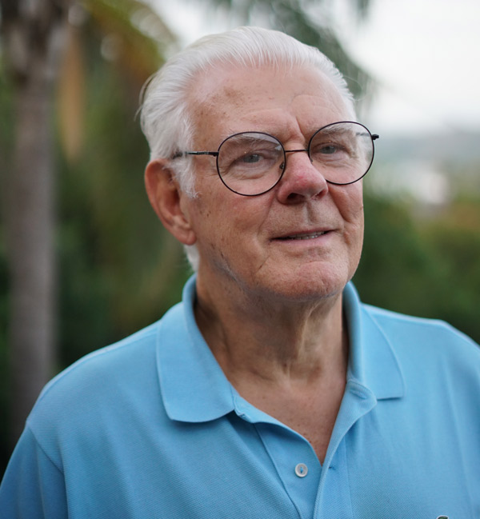

Cambio de Paradigma
Mi vida parecía estar completa cuando, a los 40 años, había formado una familia y había establecido mi propia empresa en el ámbito de la fabricación de hornos industriales. Me encontraba en un momento de éxito y plenitud, pero algo dentro de mí anhelaba algo más, una nueva experiencia que me llevara a mejorar aún más mi calidad de vida.
Fue entonces cuando recibí una invitación para participar en un entrenamiento de mejoramiento personal. Acepté y fue allí donde mi vida dio un giro inesperado. Me explicaron el concepto de intuición, una palabra que había escuchado muchas veces antes, pero que nunca había profundizado en su significado. Me di cuenta de que no era simplemente «suerte» lo que me había llevado a donde estaba, sino que era una persona intuitiva, tenía una serie de características que se manifestaban a través de mi intuición y no era suerte.
Como ingeniero, me resultaba difícil comprender algo que no respondía a un proceso lógico, pero mi curiosidad me llevó a estudiar y practicar técnicas para consolidar mi intuición. Comencé a notar cambios, sentía una mayor confianza, conexión con mi ser interior y a constatar resultados favorables en mi vida cotidiana.
Mis aprendizajes me llevaron a seguir formándome en Hipnosis y a trabajar en importantes instituciones a nivel nacional e internacional. Desde 1989 trabajo con esta herramienta de distintas formas, inicialmente en actividades grupales hasta lo individual que es lo que realizo actualmente practicando Hipnosis Regresiva. Mi enfoque se centra en ayudar a personas que buscan superar traumas emocionales, utilizando la técnica de Regresiones a Vidas Pasadas.
También instruyo a Terapeutas y a personas que desean utilizar esta herramienta en su práctica profesional.
Mi experiencia me ha llevado a entender que el cambio de paradigma es posible, y que la intuición es una facultad natural inherente al ser humano, una poderosa herramienta aliada en nuestro camino hacia la plenitud y el bienestar emocional.

Ángel Chialvo
Nací en Despeñaderos, Provincia de Córdoba en 1946.
Soy Ingeniero Metalúrgico y desde 1989 me formé y especialicé en Hipnosis, en los siguientes Institutos y escuelas:
- Fundación Moubayed en Buenos Aires, Argentina
- Silva Internacional Inc. en Laredo, Texas, E.E.U.U.
- “Hipnosis Ericksoniana”, Instituto Milton Erickson de Córdoba, Argentina.
- “Hipnosis Clínica Reparadora, Regresiones a Vidas Pasadas”, Instituto Scharovsky de Buenos Aires, Argentina.
- Postgrado en “Psicoterapia e Hipnosis”, Universidad Nacional de Córdoba Facultad de Ciencias Médicas de Córdoba, Argentina.
- “Regresiones a Vidas Pasadas”, Centro de Estudios en Terapia de Vidas Pasadas con José Luis Cabouli en Buenos Aires, Argentina.